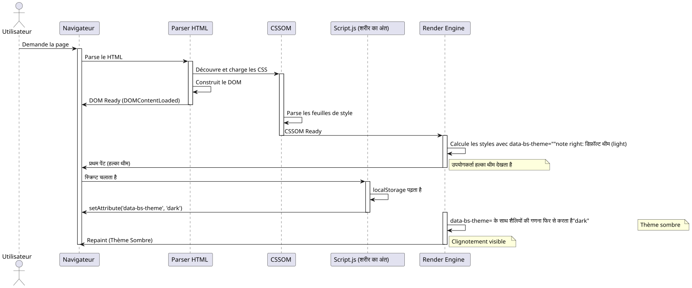

प्रीलोड करने की कला: जावास्क्रिप्ट और CSS के साथ थीम का "Flash" हटाएँ
Publié le 15 November 2025
रिज़्यूमे
इस गहन तकनीकी लेख में, हम देखते हैं कि कैसे पेज लोड होने पर होने वाले कष्टप्रद चमकते प्रभाव के बिना एक थीम (लाइट/डार्क) सेलेक्टर को लागू किया जाए। हम ब्राउज़र रेंडरिंग चक्र का विस्तृत विश्लेषण करते हैं, FOUC (फ़्लैश ऑफ़ 언स्टाइल्ड कंटेंट) के मूल कारणों की पहचान करते हैं, और सिंक्रोनस प्री-लोडिंग पर आधारित एक मज़बूत समाधान प्रस्तुत करते हैं।<head>। यह तकनीक एक सुचारू और पेशेवर उपयोगकर्ता अनुभव सुनिश्चित करती है।
समस्या: इस अभिशप्त थीम का झिलमिलाना
उपयोगकर्ता अनुभव के लिए एक दुःस्वप्न
कल्पना कीजिए कि आपने अपने वेब एप्लिकेशन के लिए एक सुंदर डार्क थीम बनाने में घंटों बिता दिए हैं। रंग पूरी तरह संतुलित हैं, विपरीतता अनुकूल है, और आपके उपयोगकर्ता इस विकल्प से प्यार करते हैं। लेकिन एक शर्मिंदगी भरी समस्या है: हर बार पेज रीलोड होने पर, एक क्षण के लिए डिफ़ॉल्ट लाइट थीम दिखाई देती है, इससे पहले कि डार्क थीम सक्रिय हो।
यह "फ़्लैश" दृश्य, यद्यपि संक्षिप्त (कभी‑कभी 100ms से कम), मानव आंख द्वारा तुरंत अनुभव किया जाता है और एक असहज अनुभव उत्पन्न करता है। उन उपयोगकर्ताओं के लिए जो दृष्टि सुविधा या पहुँच के कारण डार्क थीम चुनते हैं, यह झिलमिलाहट दर्दनाक भी हो सकती है, विशेष रूप से कम रोशनी वाले वातावरण में।
फ़OUC : एक पुराना वेब समस्या
यह घटना वह चीज की एक विविधता है जिसको 'फ़्लैश ऑफ़ अनस्टाइल्ड कंटेंट' (FOUC) कहा जाता है, जो वेब विकास की एक क्लासिक समस्या है जो सीएसएस के प्रारंभिक दिनों तक वापस जाती है। FOUC तब होता है जब ब्राउज़र अस्थायी रूप से CSS शैलियों के बिना HTML सामग्री प्रदर्शित करता है, जिससे अनस्टाइल्ड सामग्री का फ़्लैश बनता है।
हमारे विशिष्ट मामले में, हम पूरी तरह से अनस्टाइल्ड सामग्री के बारे में बात नहीं कर रहे हैं, बल्कि एक के बारे में हैंगलत थीम का फ्लैश(FOWT) - सामग्री स्टाइल की गई है, लेकिन गलत थीम के साथ। यह विशेष रूप से निराशाजनक है क्योंकि यह दर्शाता है कि हमारा एप्लिकेशन "भूल" जाती है कि उपयोगकर्ता की प्राथमिकता प्रत्येक पृष्ठ लोड पर।
गुणवत्ता की धारणा पर प्रभाव
यह समस्या, हालांकि तकनीकी है, आपके अनुप्रयोग की गुणवत्ता की धारणा पर महत्वपूर्ण प्रभाव डालती है:
पॉलिश की कमी: झिलमिलाहट से ऐसा प्रतीत होता है कि एप्लिकेशन अपूर्ण है या अनुकूलित नहीं की गई है। उपयोगकर्ता अक्सर इन छोटे दृश्य दोषों को समग्र रूप से पेशेवरता की कमी से जोड़ते हैं।
संगतता का भंग: एप्लिकेशन प्रतीत होता है कि वह उपयोगकर्ता की प्राथमिकताओं को "भूल" रही है, जिससे इंटरफ़ेस और अपेक्षाओं के बीच असंतुलन की भावना उत्पन्न होती है।
आँखों की थकान: रोशनी के प्रति संवेदनशील उपयोगकर्ताओं या माइग्रेन से पीड़ित लोगों के लिए, यह रोशनी भरी फ़्लैश सिर्फ़ एक साधारण सौंदर्य संबंधित असुविधा से अधिक हो सकता है।
अनुभूत प्रदर्शन: विडंबना यह है कि, भले ही आपकी साइट तेज़ी से लोड हो, इस ब्लिंकिंग से ऐसा प्रतीत हो सकता है कि एप्लिकेशन धीमी या अप्रतिक्रियाशील है।
समस्या का तकनीकी विश्लेषण
समस्या को हल करने के तरीके को समझने के लिए, सबसे पहले यह समझना होगा कि यह क्यों होता है। झिलमिलाहट एक वेब पृष्ठ के जीवन चक्र में तीन महत्वपूर्ण घटनाओं के बीच समय में अंतराल के कारण होती है:
-
HTML का प्रारम्भिक पर्सिंगब्राउज़र आपके पेज की संरचना को पढ़ता और विश्लेषण करता है
-
सीएसएस शैलियों का अनुप्रयोगब्राउज़र CSS नियम लागू करता है और दृश्य प्रस्तुति की गणना करता है
-
जावास्क्रिप्ट का निष्पादन: आपका कोड जो थीम बदलता है चल रहा है
समस्या तब होती है जब घटना क्रमांक 3 (JavaScript का निष्पादन) ब्राउज़र द्वारा पहले से ही शुरू किए गए या समाप्त किए गए घटना क्रमांक 2 (स्टाइलिंग लागू करने की प्रक्रिया) के बाद होती है। उस समय, ब्राउज़र पहले से ही यह निर्णय ले चुका होता है कि कौन सी थीम दिखाएँ, और आपका कोड पहले रेंडर से पहले इसे प्रभावित करने के लिए बहुत देर से आता है।
क्लासिक स्क्रिप्ट क्यों पर्याप्त नहीं है?
अनुभवी लेकिन अप्रभावी दृष्टिकोण
एक डेवलपर के लिए सबसे प्राकृतिक दृष्टिकोण यह होगा कि हम हमारे के अंत में एक स्क्रिप्ट रखें`<body>`जो उपयोगकर्ता के पसंदीदा विषय की जाँच करता है और उसे लागू करता है। यह दृष्टिकोण वेब की पारंपरिक सर्वोत्तम प्रथाओं का पालन करता है, जो पेज के अंत में स्क्रिप्ट लोड करने की सिफारिश करते हैं ताकि रेंडरिंग को ब्लॉक न किया जाए।
// À la fin de <body> - L'APPROCHE INSUFFISANTE
document.addEventListener('DOMContentLoaded', () => {
const theme = localStorage.getItem('preferred-theme');
if (theme === 'dark') {
document.documentElement.setAttribute('data-bs-theme', 'dark');
}
});यह दृष्टिकोण पहली नज़र में तर्कसंगत लगता है। हम DOM के तैयार होने का इंतज़ार करते हैं, फिर हम थीम लागू करते हैं। सरल, नहीं? दुर्भाग्य से, इस सरलता में ब्राउज़र के रेंडरिंग चक्र के टाइमिंग से संबंधित एक मौलिक दोष छिपा हुआ है।
DOMContentLoaded इवेंट को समझें
घटना`DOMContentLoaded`यह तब ट्रिगर होता है जब प्रारंभिक HTML दस्तावेज़ पूरी तरह से लोड हो गया हो और ब्राउज़र द्वारा पार्स किया गया हो,इंतज़ार किए बिनास्टाइल शीट्स, इमेज और सब-फ़्रेम्स के लोडिंग का अंत। यह समझने के लिए एक महत्वपूर्ण बिंदु है।
यहाँ घटनाओं का सामान्य अनुक्रम है :
-
ब्राउज़र HTML डाउनलोड करना शुरू करता है
-
यह HTML का विश्लेषण करता है जैसे ही इसे प्राप्त होता है
-
वह टैग खोजता है`<link>`CSS के लिए और उन्हें डाउनलोड करना शुरू करें
-
वह टैग खोजता है`<script>`और उन्हें निष्पादित करता है (उनके प्रकार और विशेषताओं के अनुसार)
-
वह DOM (Document Object Model) बनाता है
-
घटना
DOMContentLoadedट्रिगर होती है -
वह शैलियों को लागू करना जारी रखता है और लेआउट बनाता है
-
पहला पेंट (प्रदर्शन) होता है
-
घटना`load`जब सभी संसाधन लोड हो जाते हैं, तब यह ट्रिगर होता है
समस्या ? के बीच चरण 6 (DOMContentLoaded) और चरण 8 (premier paint), ब्राउज़र ने पहले ही निर्णय ले लिए हैं कि पेज को कैसे दिखाना है। यदि आपके थीम बदलने वाला स्क्रिप्ट चरण 6 पर चलता है, यह पहले ही बहुत देर हो चुकी है डिफ़ॉल्ट स्टाइल के साथ पहले प्रदर्शन से बचने के लिए।
रेंडर ब्लॉकिंग की समस्या
वास्तव में, टाइमिंग और भी जटिल है। आधुनिक ब्राउज़र अनुभव की गई प्रदर्शन को बेहतर बनाने के लिए परिष्कृत अनुकूलन तकनीकों का उपयोग करते हैं। वे उपयोगकर्ता को स्क्रीन पर कुछ दिखाने के लिए पहले पेंट (First Contentful Paint) को जितना संभव हो सके जल्दी करने की कोशिश करते हैं।
CSS डिफ़ॉल्ट रूप से "render-blocking" होते हैं, जिसका अर्थ है कि ब्राउज़र पहला पेंट करने से पहले स्टाइलशीट डाउनलोड और पार्स करने की प्रतीक्षा करता है। यह तर्कसंगत है: हम असामयिक सामग्री प्रदर्शित नहीं करना चाहते।
लेकिन यहाँ जाल है : जब ब्राउज़र इन CSS स्टाइल को पहली बार लागू करता है, तो वह वर्तमान DOM स्थिति के आधार पर ऐसा करता है। यदि विशेषता`data-bs-theme`अभी तक टैग पर परिभाषित नहीं है`<html>`, ब्राउज़र डिफ़ॉल्ट स्टाइल लागू करेगा (सामान्यतः हल्का थीम).
फिर, जब आपका स्क्रिप्ट चलता है और इस विशेषता को बदलता है, ब्राउज़र को करना चाहिए :
-
इस बदलाव से प्रभावित सभी शैलियों की गणना फिर से करें
-
यदि आवश्यक हो तो लेआउट फिर से तैयार करें
-
प्रभावित तत्वों को फिर से रंगें
यह पुनःगणना और फिर से चित्रण की प्रक्रिया है जो दृश्यमान चमक का कारण बनती है।
समस्या का दृश्यीकरण
इस समस्याग्रस्त अनुक्रम को बेहतर ढंग से समझने के लिए, एक विस्तृत अनुक्रम आरेख की जाँच करते हैं:

यह आरेख स्पष्ट रूप से समस्या को दर्शाता है: पहला paint तब होता है जब हमारा स्क्रिप्ट सही विषय सेट करने का अवसर प्राप्त नहीं कर पाता। अनुक्रमिक repaint दृश्यमान झिलमिलाहट उत्पन्न करता है।
असफल समाधान प्रयास
कई दृष्टिकोण इस समस्या को हल करने के प्रयास में अपनाए गए थे, लेकिन अधिकांश में अपने स्वयं के नुकसान हैं :
पद्धति 1 : लोड होने तक सामग्री को छिपाएँ
body {
opacity: 0;
transition: opacity 0.3s;
}
body.loaded {
opacity: 1;
}यह दृष्टिकोण तब तक सभी सामग्री को कैश करता है जब तक JavaScript सही विषय सेट नहीं कर देता। समस्या? यह कृत्रिम रूप से सामग्री के प्रदर्शन को देरी देता है, जिससे साइट धीमी लगती है। इसके अलावा, यदि JavaScript अक्षम है, तो उपयोगकर्ता कुछ भी नहीं देखता!
दृष्टिकोण 2 : एक लोडर/स्पिनर का उपयोग करें
प्रवेश 1 के समान, लेकिन एक लोडिंग स्पिनर के साथ। यह समस्या को छिपाता है लेकिन वास्तविक प्रदर्शन में सुधार नहीं करता और अनावश्यक अनुभवित देरी जोड़ता है।
पद्धति 3: डिफ़ॉल्ट रूप से डार्क थीम
कुछ डेवलपर्स CSS में डार्क थीम को डिफ़ॉल्ट के रूप में सेट करते हैं। यह डार्क थीम उपयोगकर्ताओं के लिए फ्लिकरिंग को रोकता है, लेकिन हल्की थीम उपयोगकर्ताओं के लिए विपरीत समस्या पैदा करता है !
इनमें से कोई भी दृष्टिकोण संतोषजनक नहीं है, क्योंकि वे समस्या के लक्षण का इलाज करते हैं, जड़ कारण का नहीं।
वास्तविक समाधान : जल्दी कार्य करें
इस समस्या को हल करने की कुंजी यह समझना है कि हमें उस एट्रिब्यूट को परिभाषित करना होगा।data-bs-theme पहलेकि ब्राउज़र CSS स्टाइल लगाना शुरू नहीं करता। इसका अर्थ है कि हमारा स्क्रिप्ट पृष्ठ के जीवन चक्र में पहले चलना चाहिए, और यही वह बात है जिसका हम अगले खंड में अन्वेषण करेंगे।
समाधान : पूर्व लोडिंग (Early Loading)
मूल सिद्धांत
हमारी झिलमिलाहट समस्या का सुंदर समाधान एक सरल लेकिन शक्तिशाली सिद्धांत पर आधारित है:ब्राउज़र रेंडरिंग प्रक्रिया के साथ एप्लिकेशन की स्थिति को सिंक्रोनाइज़ करना. पेज लोड होने का इंतज़ार करने के बजाय, हमें थीम सेट कर देना चाहिएके दौरानलोड हो रहा है, इससे पहले भी कि CSS शैलियाँ लागू हो जाएँ।
यह दृष्टिकोण "Early Loading" या "Synchronous Preloading" वेब विकास के शब्दजाल में कहा जाता है। इस विचार का उद्देश्य हमारे थीम डिटेक्शन लॉजिक को पृष्ठ के जीवन चक्र में हो सकने वाले सबसे पहले चरण में निष्पादित करना है, आदर्श रूप से टैग में।<head>, भले ही ब्राउज़र CSS फ़ाइलों को डाउनलोड करना शुरू न करे.
क्यों <head> आदर्श स्थान है
Le `<head>`एक HTML दस्तावेज़ को ब्राउज़र द्वारा क्रमिक रूप से ऊपर से नीचे तक प्रसंस्कृत किया जाता है। प्रत्येक तत्व उस क्रम में प्रसंस्कृत किया जाता है जिसमें वह दिखाई देता है। यह विशेषता हमारे समाधान के लिए अत्यंत महत्वपूर्ण है।
जब ब्राउज़र एक टैग से मिलता है`<script>`में`<head>` sans les attributs async ou defer, il :
-
HTML का पर्सिंग रोकें
-
स्क्रिप्ट डाउनलोड करें(यदि बाह्य) या बिस्तर (यदि इनलाइन)
-
स्क्रिप्ट को तुरंत निष्पादित करें
-
HTML का पार्सिंग फिर से शुरू करें
यह व्यवहार, अक्सर प्रदर्शन समस्या माना जाता है (जिस कारण से सामान्य सिफ़ारिश पेज के अंत में स्क्रिप्ट रखने की होती है), इस विशेष स्थिति में हमारा सहयोगी बन जाता है। अपना थीम डिटेक्शन स्क्रिप्ट पृष्ठ के शुरू में रखकर`<head>`, हम गारंटी देते हैं कि यह ब्राउज़र टैग्स से मिलने से पहले चलता है`<link>`हमारे स्टाइल शीट्स के.
समाधान की तीन-स्तरीय आर्किटेक्चर
हमारा पूर्ण समाधान तीन परस्पर निर्भर परतों से बना है, प्रत्येक एक विशिष्ट भूमिका निभाती है :
परत 1 : स्थायित्व (localStorage) यह परत उपयोगकर्ता के चयन को सत्रों के बीच संग्रहीत और पुनः प्राप्त करने के लिए जिम्मेदार है।
लेयर 2: प्रारंभिक सिंक्रोनाइज़ेशन (इनलाइन स्क्रिप्ट <head> में) यह लेयर प्रारंभिक रेंडरिंग से पहले एप्लिकेशन की स्थिति को DOM के साथ सिंक्रनाइज़ करती है।
लेयर 3: रिएक्टिव स्टाइल (CSS एट्रिब्यूट चयनकर्ता के साथ) यह लेयर लेयर 2 द्वारा परिभाषित स्थिति के आधार पर दृश्य शैलियों को परिभाषित करती है।
अब हम प्रत्येक परत का विस्तृत अन्वेषण करते हैं।
चरण 1 : उपयोगकर्ता की पसंद को सेव करना
localStorage : आपकी स्थायी स्मृति
Le localStorage`यह एक Web Storage API है जो ब्राउज़र में लगातार आधार पर कुंजी‑मूल्य युग्मों को संग्रहीत करने की अनुमति देती है। कुकीज़ के विपरीत, डेटा`localStorage:
-
इन्हें कभी भी सर्वर पर स्वचालित रूप से नहीं भेजा जाता
-
उनके पास अधिक स्टोरेज क्षमता होती है (आमतौर पर 5-10 एमबी)
-
उनकी समाप्ति तिथि नहीं होती (स्पष्ट रूप से हटाने तक निरंतर)
-
इनका सीमित प्रोटोकॉल और डोमेन (Same-Origin Policy) तक सीमित है
हमारे उपयोग केस के लिए`localStorage`यह सही है क्योंकि :
-
हमें इस जानकारी को सर्वर के साथ साझा करने की आवश्यकता नहीं है।
-
हम चाहते हैं कि प्राथमिकता अनिश्चितकाल तक बनी रहे
-
आवश्यक भंडारण आकार न्यूनतम है (कुछ बाइट्स)
थीम बैकअप का कार्यान्वयन
यहाँ बताया गया है कि हम उपयोगकर्ता के विकल्प को कैसे सहेजते हैं जब वह थीम बदलता है :
// Fonction complète pour changer le thème
function setTheme(newTheme) {
// Validation de l'entrée
if (!['light', 'dark', 'auto'].includes(newTheme)) {
console.error('Thème invalide:', newTheme);
return;
}
try {
// Sauvegarde dans localStorage
localStorage.setItem('preferred-theme', newTheme);
// Application immédiate dans le DOM
document.documentElement.setAttribute('data-bs-theme', newTheme);
// Dispatch d'un événement personnalisé pour notifier d'autres composants
window.dispatchEvent(new CustomEvent('theme-changed', {
detail: { theme: newTheme }
}));
console.log('Thème changé:', newTheme);
} catch (error) {
console.error('Erreur lors de la sauvegarde du thème:', error);
// Fallback : on applique quand même le thème visuellement
document.documentElement.setAttribute('data-bs-theme', newTheme);
}
}
// Exemple d'utilisation avec un bouton
document.getElementById('theme-toggle').addEventListener('click', () => {
const currentTheme = document.documentElement.getAttribute('data-bs-theme') || 'light';
const newTheme = currentTheme === 'light' ? 'dark' : 'light';
setTheme(newTheme);
});त्रुटि मामलों का प्रबंधन
यह महत्वपूर्ण है कि मामलों को प्रबंधित किया जाए जहाँ वह`localStorage`उपलब्ध या सुलभ नहीं है। कई परिदृश्य एक्सेस को रोक सकते हैं`localStorage`:
सख्त निजी नेविगेशनसफ़ारी निजी ब्राउज़िंग मोड में एक अपवाद फेंकता है`QuotaExceededError`लिखने के प्रयासों के दौरान में`localStorage`.
गोपनीयता सेटिंग्स: कुछ ब्राउज़र या गोपनीयता एक्सटेंशन एक्सेस को ब्लॉक कर सकते हैं`localStorage`.
डोमेन की सीमाएँ : Le `localStorage`यह प्रोटोकॉल पर सुलभ नहीं है`file://`कुछ ब्राउज़र में।
भंडारण स्थान भर गयाहालांकि दुर्लभ, भंडारण स्थान पूरी तरह से भर सकता है।
इसलिए हमारा कोड एक ब्लॉक का उपयोग करता है`try…catch`इन स्थितियों को शालीनता से संभालने के लिए, भले ही स्थायित्व उपलब्ध न हो, थीम बदलने की सुविधा प्रदान करना जारी रखें।
अधिक उन्नत निरंतरता रणनीतियाँ
अधिक जटिल अनुप्रयोगों के लिए, आप अतिरिक्त रणनीतियों पर विचार कर सकते हैं :
सर्वर सिंक्रोनाइज़ेशन (वैकल्पिक)
async function setTheme(newTheme) {
// Sauvegarde locale immédiate
localStorage.setItem('preferred-theme', newTheme);
document.documentElement.setAttribute('data-bs-theme', newTheme);
// Synchronisation serveur en arrière-plan (si l'utilisateur est connecté)
if (userIsAuthenticated()) {
try {
await fetch('/api/user/preferences', {
method: 'POST',
headers: { 'Content-Type': 'application/json' },
body: JSON.stringify({ theme: newTheme })
});
} catch (error) {
console.warn('Échec de la synchronisation serveur:', error);
// L'échec n'est pas critique car la préférence est déjà sauvegardée localement
}
}
}यह दृष्टिकोण लॉग इन उपयोगकर्ताओं के लिए उपकरणों के बीच प्राथमिकताओं को सिंक्रनाइज़ करने की अनुमति देता है, जबकि तत्काल स्थानीय प्रतिक्रिया बनाए रखता है।
चरण 2 : प्री-लोडिंग स्क्रिप्ट में `<head>
समाधान का दिल
यहाँ वास्तव में जादू होता है। हम एक छोटा स्क्रिप्ट लगाएँगे।इनलाइनहमारे में सीधे`<head>`, सभी हमारे टैग से पहले`<link>`शैली शीट्स की. यह स्क्रिप्ट जानबूझकर न्यूनतम, स्वतंत्र, और सबसे तेज़ तरीके से चलाने के लिए डिज़ाइन किया गया है।
<!DOCTYPE html>
<html lang="fr">
<head>
<meta charset="UTF-8">
<meta name="viewport" content="width=device-width, initial-scale=1.0">
<title>Mon Site Incroyable</title>
<!-- ==========================================
NOTRE SCRIPT MAGIQUE DE PRÉ-CHARGEMENT
Ce script DOIT être le premier élément
dans le <head> après les meta tags
========================================== -->
<script>
// IIFE pour ne pas polluer le scope global
(function() {
'use strict';
try {
// Lecture de la préférence sauvegardée
const savedTheme = localStorage.getItem('preferred-theme');
// Si une préférence existe, on l'applique immédiatement
if (savedTheme) {
document.documentElement.setAttribute('data-bs-theme', savedTheme);
}
// Optionnel : Détecter la préférence système si aucune sauvegarde
else if (window.matchMedia && window.matchMedia('(prefers-color-scheme: dark)').matches) {
document.documentElement.setAttribute('data-bs-theme', 'dark');
}
// Sinon, le thème par défaut du CSS sera utilisé (généralement 'light')
} catch (error) {
// En cas d'erreur (localStorage bloqué, etc.), on log discrètement
// et on laisse le thème par défaut s'appliquer
console.warn('Impossible de charger la préférence de thème:', error);
}
})();
</script>
<!-- FIN DU SCRIPT MAGIQUE -->
<!-- Les feuilles de style sont chargées APRÈS le script -->
<link rel="stylesheet" href="css/bootstrap.min.css">
<link rel="stylesheet" href="css/styles.css">
<!-- Autres ressources du head -->
<link rel="icon" href="favicon.ico">
</head>
<body>
<!-- Contenu de la page -->
</body>
</html>स्क्रिप्ट की अनाटॉमी : हर पंक्ति मायने रखती है
इस स्क्रिप्ट को प्रत्येक पंक्ति में तोड़कर समझते हैं कि प्रत्येक डिज़ाइन निर्णय क्यों लिया गया :
IIFE (तुरंत बुलाया गया फ़ंक्शन अभिव्यक्ति)
(function() {
// ...
})();यह संरचना एक फ़ंक्शन बनाती है जो तुरंत निष्पादित होती है। क्यों? ताकि हम अपने चर को एक स्थानीय स्कोप में अलग कर सकें और वैश्विक स्कोप को प्रदूषित होने से बचा सकें। भले ही हम केवल उपयोग करें`const`(जिसका ब्लॉक स्कोप होता है), IIFE एक अच्छी प्रथा है जो हमारे इरादों को स्पष्ट करती है और संभावित नाम संघर्षों से बचाती है।
कड़ा मोड
'use strict';यह निर्देश जावास्क्रिप्ट के कड़ाई मोड को सक्रिय करता है, जो : - अघोषित चर के उपयोग को प्रतिबंधित करता है - Génère des erreurs pour les opérations dangereuses कुछ जावास्क्रिप्ट इंजनों में प्रदर्शन में सुधार लाता है
इस तरह के गंभीर स्क्रिप्ट के लिए, हम अधिकतम सुरक्षा चाहते हैं।
ब्लॉक try…catch
try {
// Code principal
} catch (error) {
console.warn('Impossible de charger la préférence de thème:', error);
}यह ब्लॉक अत्यंत महत्वपूर्ण है। यह सुनिश्चित करता है कि यदि कुछ गलत हो जाता है (localStorage ब्लॉक, असंभाव्य सिंटैक्स त्रुटि, आदि.), तो हमारा स्क्रिप्ट पूरी पृष्ठ लोड को अवरुद्ध नहीं करेगा। का उपयोग`console.warn`इसके बजाय`console.error`इंगित करता है कि यह एक गंभीर समस्या नहीं है।
localStorage की पढ़ाई
const savedTheme = localStorage.getItem('preferred-theme');यह पंक्ति कुछ संदर्भों में (सफारी की सख्त निज़ी नेविगेशन) में एक अपवाद उठा सकती है। इसलिए यह एक try…catch ब्लॉक में है।
शर्ती आवेदन
if (savedTheme) {
document.documentElement.setAttribute('data-bs-theme', savedTheme);
}हम केवल तभी थीम लागू करते हैं जब हमें एक संग्रहीत थीम मिली हो। अन्यथा, हम CSS को अपने डिफ़ॉल्ट थीम का उपयोग करने देते हैं। यह दृष्टिकोण जावास्क्रिप्ट में हार्ड-कोडेड डिफ़ॉल्ट मान की तुलना में अधिक मजबूत है।
सिस्टम प्राथमिकता का पता लगाना (बोनस)
एक वैकल्पिक लेकिन शालीन सुधार यह है कि यदि उपयोगकर्ता आपके एप्लिकेशन में अभी तक स्पष्ट विकल्प नहीं चुना है, तो ऑपरेटिंग सिस्टम की थीम प्राथमिकता का पता लगाया जाता है :
else if (window.matchMedia && window.matchMedia('(prefers-color-scheme: dark)').matches) {
document.documentElement.setAttribute('data-bs-theme', 'dark');
}यह सुविधा मीडिया क्वेरी का उपयोग करती है`prefers-color-scheme`सिस्टम को पूछने के लिए। macOS, Windows 10+, iOS, और आधुनिक Android पर, यह प्रश्न उपयोगकर्ता की सिस्टम प्राथमिकता लौटाता है।
फ़ायदे : - व्यक्तिगत अनुभव पहली यात्रा से - संगतता के साथ उपयोगकर्ता का प्रणाली पर्यावरण - पहली यात्रा के लिए कोई भंडारण आवश्यक नहीं
विचार : सभी ब्राउज़र इस सुविधा का समर्थन नहीं करते हैं (लेकिन 2020 से समर्थन उत्कृष्ट रहा है) - सत्यापन`window.matchMedia`संगतता सुनिश्चित करता है - उपयोगकर्ता हमेशा इस विकल्प को ओवरराइड कर सकता है
प्रदर्शन : यह स्क्रिप्ट तेज़ क्यों है
हमारा प्री-लोड स्क्रिप्ट बेहद तेज़ होने के लिए डिज़ाइन किया गया है :
न्यूनतम आकारलगभग 300 बाइट्स अनमिनिफ़ाइड, 200 बाइट्स मिनिफ़ाइड। यह किसी भी इमेज या जावास्क्रिप्ट लाइब्रेरी की तुलना में नगण्य है।
इनलाइनको अतिरिक्त HTTP अनुरोध नहीं है। स्क्रिप्ट HTML में है, इसलिए यह तुरंत उपलब्ध है।
सादे समकालिक संचालनlocalStorage में एक कुंजी पढ़ना (अत्यंत तेज़ संचालन) और DOM विशेषता संशोधन (ब्राउज़र का मूल संचालन).
कोई निर्भरता नहीं: कोई फ्रेमवर्क नहीं, कोई लाइब्रेरी नहीं, केवल वैनिला JavaScript। कोई स्टार्टअप समय नहीं, कोई डिपेंडेंसी पार्सिंग नहीं।
एकल निष्पादनयह स्क्रिप्ट लोड होने पर केवल एक बार चलती है। कोई इवेंट लिस्नर नहीं, कोई लूप नहीं, कोई जटिल गणना नहीं।
व्यावहारिक रूप से, आधुनिक हार्डवेयर पर, यह स्क्रिप्ट 1 मिलीसेकंड से कम समय में चलती है – एक अवलगनीय समय जो पृष्ठ लोड होने के प्रदर्शन पर कोई प्रभाव नहीं डालता।
<head>` में इष्टतम स्थान
तत्वों का क्रम में`<head>`est important. Voici l’ordre recommandé :
<head>
<!-- 1. Métadonnées critiques -->
<meta charset="UTF-8">
<meta name="viewport" content="width=device-width, initial-scale=1.0">
<!-- 2. Notre script de pré-chargement (IMMÉDIATEMENT après les meta) -->
<script>
(function() { /* notre code */ })();
</script>
<!-- 3. Titre de la page -->
<title>Mon Site</title>
<!-- 4. Feuilles de style -->
<link rel="stylesheet" href="styles.css">
<!-- 5. Autres ressources (fonts, favicons, etc.) -->
<link rel="preconnect" href="https://fonts.googleapis.com">
<link rel="icon" href="favicon.ico">
<!-- 6. Autres scripts avec defer ou async -->
<script src="app.js" defer></script>
</head>यह आदेश सुनिश्चित करता है कि :
-
चारसेट किसी भी पाठ प्रसंस्करण से पहले परिभाषित किया जाता है
-
हमारा स्क्रिप्ट CSS लोड होने से पहले चलता है
-
CSS को बाद में लोड किया जाता है और फिर सही विषय को सीधे लागू किया जाता है
-
अन्य गैर‑महत्वपूर्ण संसाधन अंत में लोड किए जाते हैं
चरण 3 : CSS एट्रिब्यूट सेलेक्टर्स की शक्ति
बूटस्ट्रैप 5 थीम सिस्टम
Bootstrap 5 ने CSS कस्टम प्रॉपर्टीज़ (CSS चर) और एट्रिब्यूट सेलेक्टर्स पर आधारित थीम प्रबंधन की एक शानदार प्रणाली पेश की। यह प्रणाली एट्रिब्यूट का उपयोग करती है`data-bs-theme`तत्व पर`<html>`निर्धारित करने के लिए कि कौन सा रंग चरों का सेट लागू करना है
इस प्रणाली की सुंदरता इसकी सरलता में निहित है: अलग‑अलग स्टाइलशीट लोड करने या हजारों तत्वों पर क्लासेज को टॉगल करने के बजाय, हम केवल एक तत्व पर एक विशेषता बदलते हैं, और CSS कैस्केड के माध्यम से बाक़ी काम कर देता है।
CSS संरचना एक थीम सिस्टम के लिए
यहाँ एक पूर्ण CSS संरचना है एक मजबूत थीम प्रणाली लागू करने के लिए :
/**
* SYSTÈME DE THÈME COMPLET
* Utilise les Custom Properties CSS pour une maintenance facile
*/
/* ============================================
THÈME PAR DÉFAUT (LIGHT)
Défini sur :root pour être le fallback
============================================ */
:root {
/* Couleurs de base */
--color-primary: #0d6efd;
--color-secondary: #6c757d;
--color-success: #198754;
--color-danger: #dc3545;
--color-warning: #ffc107;
--color-info: #0dcaf0;
/* Couleurs de fond */
--bg-primary: #ffffff;
--bg-secondary: #f8f9fa;
--bg-tertiary: #e9ecef;
/* Couleurs de texte */
--text-primary: #212529;
--text-secondary: #6c757d;
--text-tertiary: #adb5bd;
/* Couleurs de bordure */
--border-color: #dee2e6;
--border-color-subtle: #e9ecef;
/* Couleurs d'ombre */
--shadow-sm: rgba(0, 0, 0, 0.075);
--shadow-md: rgba(0, 0, 0, 0.15);
--shadow-lg: rgba(0, 0, 0, 0.25